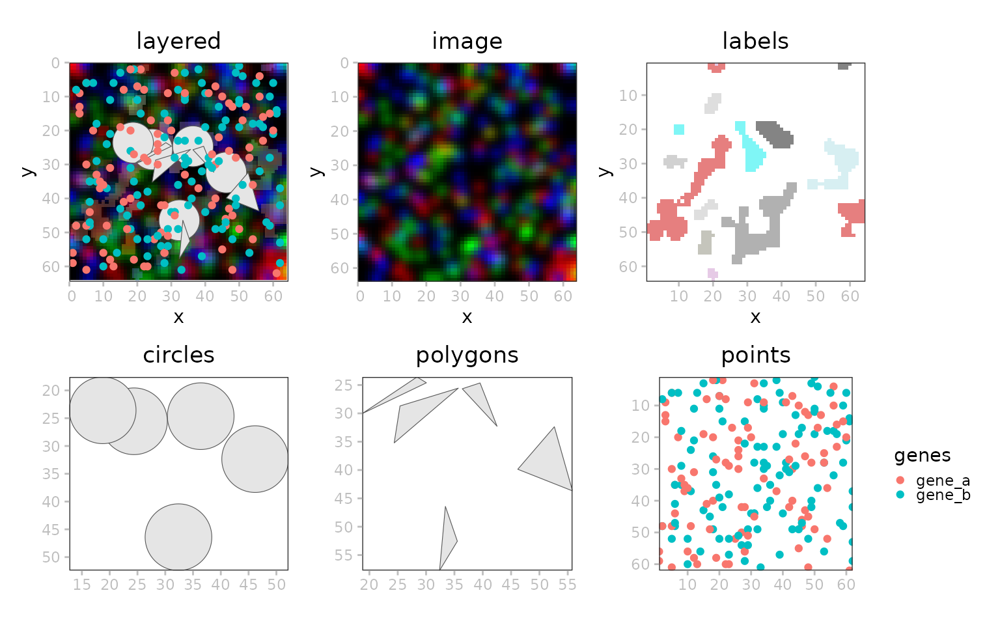
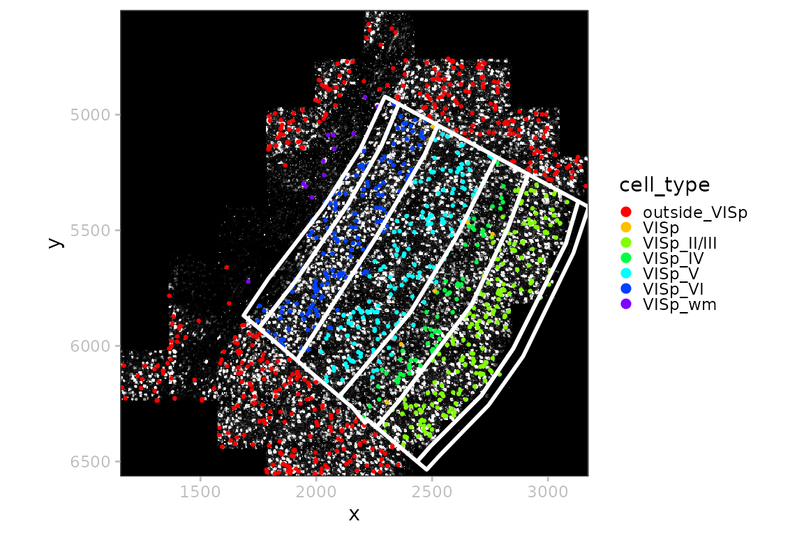
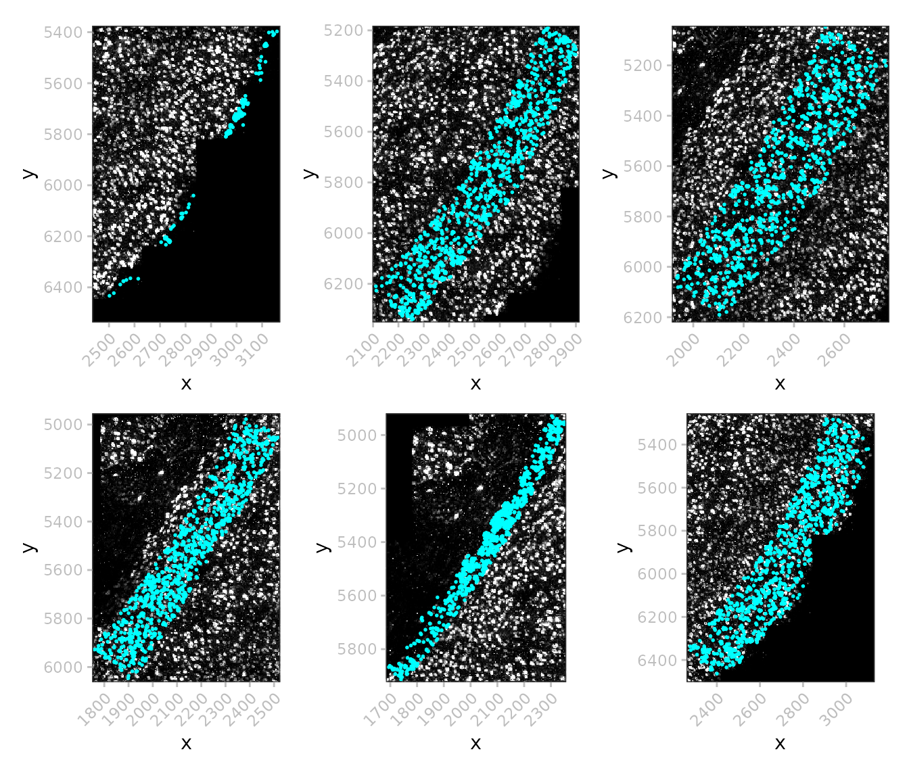

`SpatialData.plot`
Helena L. Crowell
Artür Manukyan
Hugo Gruson
Vince Carey
June 08, 2026
Source:vignettes/SpatialData.plot.Rmd
SpatialData.plot.Rmd
library(ggplot2)
library(patchwork)
library(ggnewscale)
library(spatialdataR)
library(SpatialData.data)
library(SpatialData.plot)
library(SingleCellExperiment)Introduction
The SpatialData.plot package contains a set of plotting
functions for spatial omics data stored as SpatialData
.zarr files that follow OME-NGFF
specs.
Each SpatialData object is composed of five layers:
images, labels, shapes, points, and tables. Each layer may contain an
arbitrary number of elements.
Images and labels are represented as ZarrArrays (Rarr).
Points and shapes are represented as arrow objects
linked to an on-disk .parquet file. As such, all data are
represented out of memory.
Element annotation as well as cross-layer summarizations (e.g., count matrices) are represented as SingleCellExperiment as tables.
x <- file.path("extdata", "blobs.zarr")
x <- system.file(x, package="spatialdataR")
(x <- readSpatialData(x))## class: SpatialData
## - images(2):
## - blobs_image (3,64,64)
## - blobs_multiscale_image (3,64,64)
## - labels(2):
## - blobs_labels (64,64)
## - blobs_multiscale_labels (64,64)
## - points(1):
## - blobs_points (200)
## - shapes(3):
## - blobs_circles (5,circle)
## - blobs_multipolygons (2,polygon)
## - blobs_polygons (5,polygon)
## - tables(1):
## - table (3,10) [blobs_labels]
## coordinate systems(5):
## - global(8): blobs_image blobs_multiscale_image ... blobs_polygons
## blobs_points
## - scale(1): blobs_labels
## - translation(1): blobs_labels
## - affine(1): blobs_labels
## - sequence(1): blobs_labelsVisualization
Images
Image/LabelArrays are linked to potentially multiscale
.zarr stores. Their show method includes the scales available for a
given element:
image(x, "blobs_image")## class: SpatialDataImage
## Scales (1): (3,64,64)
image(x, "blobs_multiscale_image")## class: SpatialDataImage (MultiScale)
## Scales (3): (3,64,64 3,32,32 3,16,16)Internally, multiscale ImageArrays are stored as a list
of ZarrArray, e.g.:
## [,1] [,2] [,3]
## [1,] 3 3 3
## [2,] 64 32 16
## [3,] 64 32 16To retrieve a specific scale’s ZarrArray, we can use
data(., k), where k specifies the target
scale. This also works for plotting:
wrap_plots(nrow=1, lapply(seq(3), \(.)
plotSpatialData() + plotImage(x, i=2, k=.)))
Labels
i <- "blobs_labels"
t <- getTable(x, i)
t$id <- sample(letters, ncol(t))
table(x) <- t
p <- plotSpatialData()
pal_d <- hcl.colors(10, "Spectral")
pal_c <- hcl.colors(9, "Inferno")[-9]
a <- p + plotLabel(x, i, pal="grey") # binary
b <- p + plotLabel(x, i, c="id", pal=pal_d) # metadata
c <- p + plotLabel(x, i, c="channel_1_sum", pal=pal_c) # assay
(a | b | c) +
plot_layout(guides="collect") &
theme(legend.position="bottom")
Points
i <- "blobs_points"
a <- p + plotPoint(x, i)
b <- p + plotPoint(x, i, col="genes") # discrete
c <- p + plotPoint(x, i, col="instance_id") # continuous
(a | b | c) 
Shapes
p <- plotSpatialData()
a <- p +
ggtitle("polygons") +
plotShape(x, "blobs_polygons")
b <- p +
ggtitle("multipolygons") +
plotShape(x, "blobs_multipolygons")
c <- p +
ggtitle("circles") +
plotShape(x, "blobs_circles")
(a | b | c)
Layering
p <- plotSpatialData()
# joint
all <- p +
plotImage(x) +
plotLabel(x, a=1/3) +
plotShape(x, 1) +
plotShape(x, 3) +
new_scale_color() +
plotPoint(x, col="genes") +
ggtitle("layered")
# split
one <- list(
p + plotImage(x) + ggtitle("image"),
p + plotLabel(x) + ggtitle("labels"),
p + plotShape(x, 1) + ggtitle("circles"),
p + plotShape(x, 3) + ggtitle("polygons"),
p + plotPoint(x, col="genes") + ggtitle("points"))
wrap_plots(c(list(all), one), nrow=2)
Examples
MERFISH
In this example data, we do not have a label for the
shape polygons. Such labels could be morphological regions
annotated by pathologists.
dir.create(td <- tempfile())
pa <- get_demo_SDdata("merfish")
(x <- readSpatialData(pa))## class: SpatialData
## - images(1):
## - rasterized (1,522,575)
## - labels(0):
## - points(1):
## - single_molecule (3714642)
## - shapes(2):
## - anatomical (6,polygon)
## - cells (2388,circle)
## - tables(1):
## - table (268,2389) [cells]
## coordinate systems(1):
## - global(4): rasterized anatomical cells single_moleculeThere are only 2388 cells, but 3,714,642 molecules, so that we downsample a random subset of 1,000 for visualization:
# layered visualization
plotSpatialData() +
plotImage(x, c="white") +
plotPoint(x, n=1e3, col="cell_type", size=0.5) +
scale_color_manual(values=rainbow(8)) +
guides(col=guide_legend(override.aes=list(size=2))) +
plotShape(x, i="anatomical", fill=NA, col="white", linewidth=1) 
# subset & downsample for speed
y <- x[c("images", "points"), ]
n <- length(point(y))
i <- sample(n, 1e5)
point(y) <- point(y)[i]
# polygon queries
lapply(seq_along(shape(x)), \(s) {
df <- data(shape(x)[s, ])
z <- crop(y, sf::st_as_sf(df))
plotSpatialData() +
plotImage(z) +
plotPoint(z, n=1e3, size=1/3, col="cyan")
}) |> wrap_plots(nrow=2) & theme(axis.text.x=element_text(angle=45, hjust=1))
MibiTOF
Colorectal carcinoma, 25 MB; no shapes, no points.
(x <- ColorectalCarcinomaMIBITOF())## class: SpatialData
## - images(3):
## - point16_image (3,1024,1024)
## - point23_image (3,1024,1024)
## - point8_image (3,1024,1024)
## - labels(3):
## - point16_labels (1024,1024)
## - point23_labels (1024,1024)
## - point8_labels (1024,1024)
## - points(0):
## - shapes(0):
## - tables(1):
## - table (36,3309) [point8_labels,point16_labels,point23_labels]
## coordinate systems(3):
## - point16(2): point16_image point16_labels
## - point23(2): point23_image point23_labels
## - point8(2): point8_image point8_labels
ps <- lapply(imageNames(x), \(i) plotSpatialData() + plotImage(x, i) + ggtitle(i))
wrap_plots(ps, nrow=1)
# bounding-box query
bb <- list(
xmin=0, xmax=800,
ymin=500, ymax=900)
y <- crop(x["images", 1], bb)
plotSpatialData() + plotImage(y)
Session info
## R Under development (unstable) (2026-06-06 r90114)
## Platform: x86_64-pc-linux-gnu
## Running under: Ubuntu 24.04.4 LTS
##
## Matrix products: default
## BLAS: /usr/lib/x86_64-linux-gnu/openblas-pthread/libblas.so.3
## LAPACK: /usr/lib/x86_64-linux-gnu/openblas-pthread/libopenblasp-r0.3.26.so; LAPACK version 3.12.0
##
## locale:
## [1] LC_CTYPE=C.UTF-8 LC_NUMERIC=C LC_TIME=C.UTF-8
## [4] LC_COLLATE=C.UTF-8 LC_MONETARY=C.UTF-8 LC_MESSAGES=C.UTF-8
## [7] LC_PAPER=C.UTF-8 LC_NAME=C LC_ADDRESS=C
## [10] LC_TELEPHONE=C LC_MEASUREMENT=C.UTF-8 LC_IDENTIFICATION=C
##
## time zone: UTC
## tzcode source: system (glibc)
##
## attached base packages:
## [1] stats4 stats graphics grDevices utils datasets methods
## [8] base
##
## other attached packages:
## [1] SingleCellExperiment_1.35.1 SummarizedExperiment_1.43.0
## [3] Biobase_2.73.1 GenomicRanges_1.65.0
## [5] Seqinfo_1.3.0 IRanges_2.47.2
## [7] S4Vectors_0.51.3 BiocGenerics_0.59.7
## [9] generics_0.1.4 MatrixGenerics_1.25.0
## [11] matrixStats_1.5.0 SpatialData.plot_0.99.7
## [13] SpatialData.data_0.99.6 spatialdataR_0.99.43
## [15] ggnewscale_0.5.2 patchwork_1.3.2
## [17] ggplot2_4.0.3 BiocStyle_2.41.0
##
## loaded via a namespace (and not attached):
## [1] DBI_1.3.0 RBGL_1.89.0 httr2_1.2.2
## [4] anndataR_1.3.0 rlang_1.2.0 magrittr_2.0.5
## [7] Rarr_2.0.1 otel_0.2.0 RSQLite_3.53.1
## [10] e1071_1.7-17 compiler_4.7.0 dir.expiry_1.21.0
## [13] paws.storage_0.10.0 png_0.1-9 systemfonts_1.3.2
## [16] vctrs_0.7.3 pkgconfig_2.0.3 wk_0.9.5
## [19] crayon_1.5.3 fastmap_1.2.0 dbplyr_2.5.2
## [22] XVector_0.53.0 labeling_0.4.3 paws.common_0.8.9
## [25] rmarkdown_2.31 graph_1.91.0 ragg_1.5.2
## [28] bit_4.6.0 purrr_1.2.2 xfun_0.58
## [31] cachem_1.1.0 jsonlite_2.0.0 blob_1.3.0
## [34] DelayedArray_0.39.3 uuid_1.2-2 tweenr_2.0.3
## [37] parallel_4.7.0 R6_2.6.1 bslib_0.11.0
## [40] RColorBrewer_1.1-3 reticulate_1.46.0 jquerylib_0.1.4
## [43] Rcpp_1.1.1-1.1 bookdown_0.46 knitr_1.51
## [46] R.utils_2.13.0 Matrix_1.7-5 tidyselect_1.2.1
## [49] duckspatial_1.1.1 abind_1.4-8 yaml_2.3.12
## [52] curl_7.1.0 lattice_0.22-9 tibble_3.3.1
## [55] withr_3.0.2 S7_0.2.2 evaluate_1.0.5
## [58] desc_1.4.3 sf_1.1-1 BiocFileCache_3.3.0
## [61] units_1.0-1 proxy_0.4-29 polyclip_1.10-7
## [64] pillar_1.11.1 BiocManager_1.30.27 filelock_1.0.3
## [67] KernSmooth_2.23-26 scales_1.4.0 class_7.3-23
## [70] glue_1.8.1 tools_4.7.0 fs_2.1.0
## [73] grid_4.7.0 basilisk_1.25.0 duckdb_1.5.2
## [76] ggforce_0.5.0 cli_3.6.6 rappdirs_0.3.4
## [79] textshaping_1.0.5 S4Arrays_1.13.0 dplyr_1.2.1
## [82] gtable_0.3.6 R.methodsS3_1.8.2 sass_0.4.10
## [85] digest_0.6.39 classInt_0.4-11 SparseArray_1.13.2
## [88] ZarrArray_1.1.0 farver_2.1.2 memoise_2.0.1
## [91] htmltools_0.5.9 pkgdown_2.2.0 R.oo_1.27.1
## [94] lifecycle_1.0.5 bit64_4.8.2 MASS_7.3-65